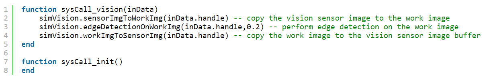
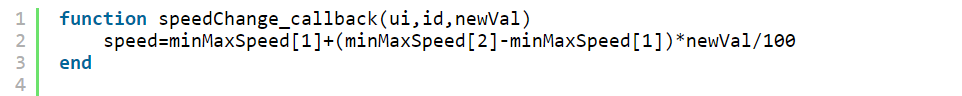
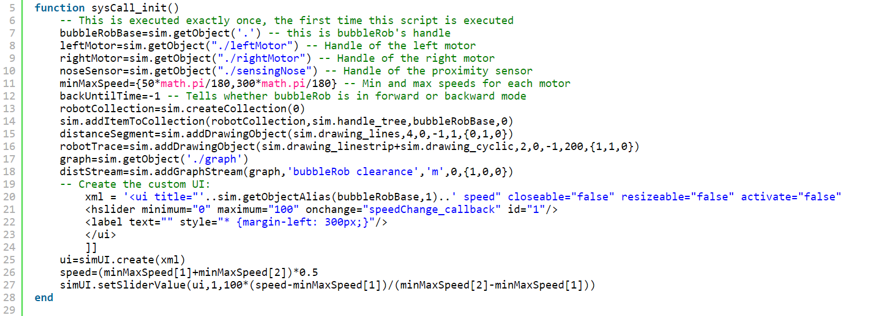

tutorial1 <<
Previous Next >> pj1
Lua
盡可能理解程式碼，便於未來製作專案
sysCall_vision(inData) 函數傳入一個名為 inData 的參數，用來處理視覺相關的資料。
在函數內部，程式碼使用 simVision 模組提供的函數來處理視覺相關的操作，sensorImgToWorkingImg 將視覺傳感器的圖像複製到工作圖像中，edgeDetectionOnWorking 對工作圖像執行邊緣檢測，workImgToSensorImg 將工作圖像複製回視覺傳感器圖像緩衝區中。
sysCall_init() 函數是初始化函數，當程式啟動時會自動執行。但此函數目前內部為空，沒有任何操作。
另外在 CoppeliaSim 中，每個場景中的物體都有一個唯一的識別符號，稱為 "句柄 handle"。handle 在計算機編程中是常用的術語，為一個整數，可以用來識別不同的物體或場景中的元件。
為了處理 CoppeliaSim 中的視覺感測器的操作，並在程式初始化時執行。

speedChange_callback 的函數定義了當 ui 中相應的控制元件的值發生改變時，會自動執行此函數。該函數會接收三個參數：
- ui 表示當前 ui 界面的狀態和控制元件的屬性，可以通過它來獲取相關的資訊。
- id 表示控制元件的 id，可以通過它來判斷是哪個控制元件發生了值的改變。
- newVal 表示控制元件的新值，即使用者設置的新值。
在函數內部，程式碼會使用一個數組 minMaxSpeed 計算新的速度值，其中 minMaxSpeed[1] 表示速度的最小值，minMaxSpeed[2] 表示速度的最大值。然後根據控制元件的新值 newVal，通過簡單的線性插值計算出新的速度值，並將其存儲在 speed 變數中。
用於根據 ui 中的控制元件值的改變，動態調整程式中的速度變數。

sysCall_init() 函數執行於模擬場景開始運行時，只執行一次，且是第一次執行這個腳本。
通過 sim.getObject() 函數獲取 BubbleRob 模型的不同元件的句柄，並且將它們存儲到相應的變量中。
bubbleRobBase=sim.getObject('.') 獲取 BubbleRob 模型的基座物件的句柄，即 BubbleRob 的根物件。
leftMotor=sim.getObject("./leftMotor") 獲取 BubbleRob 模型中左側馬達的句柄。
rightMotor=sim.getObject("./rightMotor") 獲取 BubbleRob 模型中右側馬達的句柄。
noseSensor=sim.getObject("./sensingNose") 獲取 BubbleRob 模型中前方傳感器的句柄。
獲取物件句柄可以讓我們在後續的程式碼中控制 BubbleRob 模型的運動。
tutorial1 <<
Previous Next >> pj1